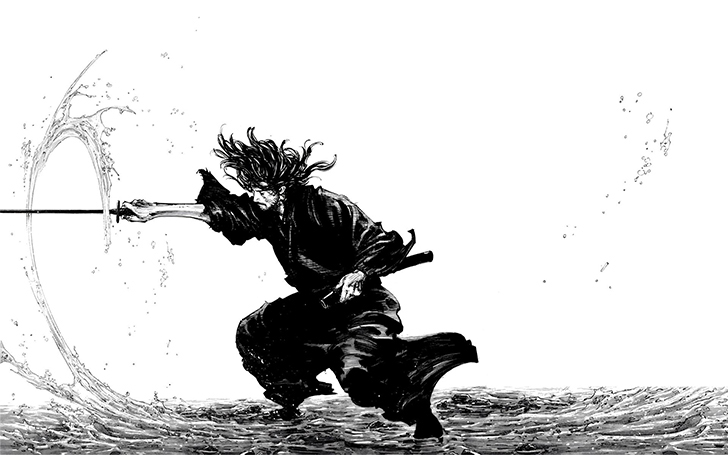

Vagabond
Resumo
Baseado no livro Musashi, de Eiji Yoshikawa, tem como protagonista é o lendário espadachim Miyamoto Musashi, conhecido no Japão como sendo o maior samurai de todos os tempos. O mangá é um retrato fictício da vida de Musashi, um ronin (samurai que não serve a nenhum mestre) que viajava pelo Japão na procura de grandes adversários para desafiar e, assim, aprimorar-se. A mescla de lutas espetaculares, com a milenar filisofia oriental, além de uma pitada de romance e comédia, torna o mangá simplesmente irresistível.